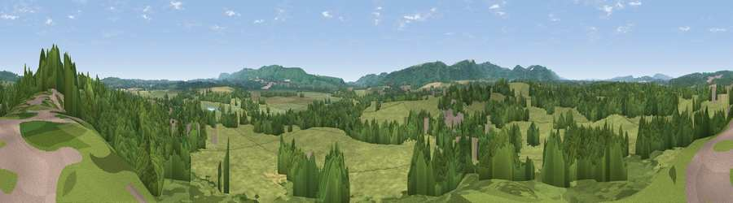

Viewpoint near Coldwaltham
#30571 in England · top 50% of its area beats it · near Coldwaltham · path 109 mWhere it is
The exact computed spot (TQ 01775 16175). Click the marker for map links.
Public access: the nearest public right of way is about 109 m away — the final stretch may cross private land. Computed from Natural England's CRoW access layer and OpenStreetMap rights of way — not the legal definitive map. Always verify locally.
The view, rendered

A 360° render of this exact spot computed from the terrain model, tree cover and land cover — summer colours, afternoon light, calibrated against photographs of famous viewpoints. Real trees, hedges and buildings will differ in detail.
The panorama
Grey silhouette: terrain skyline in each direction (720 bearings, Earth curvature and refraction included). Dashed green: skyline with trees (+15 m) and buildings (+8 m) as obstacles. Blue strip: how far the ground is visible on each bearing.
Where the view opens
Wedge length = distance to the farthest visible ground on that bearing (vegetation-aware). Rings at 10, 25 and 50 km.
What fills the view
55% grassland · 39% woodland · 3% cropland · 3% built-up
Angular shares of the visible panorama (visual magnitude), not map area. Landscape diversity 0.40 (0–1 Shannon).
Key numbers
More beautiful places nearby
The staircase of upgrades: each row has a higher view potential than everything closer. Driving times are estimates from straight-line distance, calibrated against real road routing — check an actual route before setting out.
| Place | Direction | Drive | Score |
|---|---|---|---|
| Viewpoint near Fittleworth | NNW · 3 km | ~8 min | 41.2 |
| Park Mound | NE · 3 km | ~8 min | 42.9 |
| Westburton Hill | SW · 4 km | ~9 min | 84.2 |
| Bignor Hill | SW · 5 km | ~10 min | 84.4 |
| Viewpoint near Washington | ESE · 12 km | ~23 min | 85.0 |
| Chanctonbury Ring | ESE · 13 km | ~24 min | 87.0 |
| Firle Beacon | ESE · 48 km | ~69 min | 88.9 |
| Viewpoint near Niton | SW · 66 km | ~89 min | 89.2 |
50.93605, -0.55296 · source: screening · position refined by local search. Computed location — check access rights before visiting.